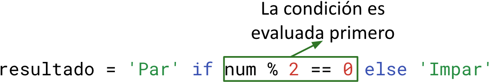
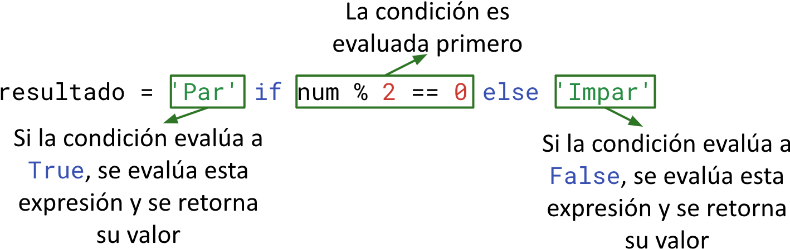
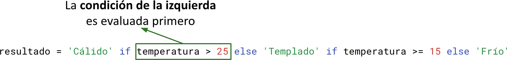
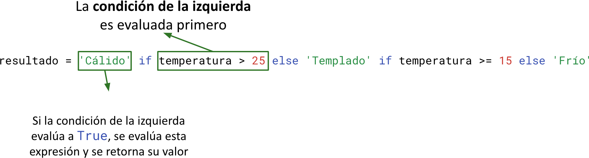
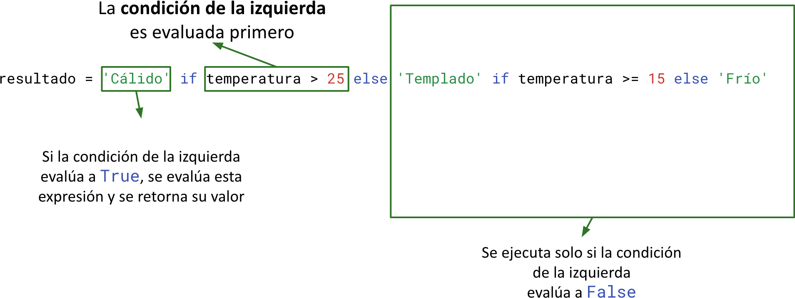
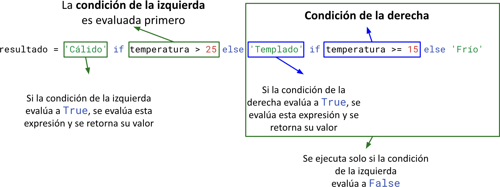
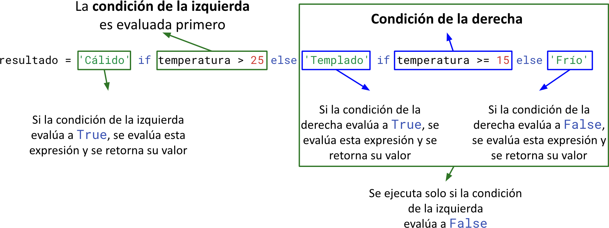

<!DOCTYPE html>
<html lang="en">
  <head>
    <meta charset="utf-8" />
    <meta name="viewport" content="width=device-width, initial-scale=1.0, maximum-scale=1.0, user-scalable=no" />

    <title></title>
    <link rel="stylesheet" href="dist/reveal.css" />
    <link rel="stylesheet" href="dist/theme/iph.css" id="theme" />
    <link rel="stylesheet" href="plugin/highlight/spyder.css" />
	<link rel="stylesheet" href="css/layout.css" />
	<link rel="stylesheet" href="plugin/customcontrols/style.css">


    <script defer src="dist/fontawesome/all.min.js"></script>

	<script type="text/javascript">
		var forgetPop = true;
		function onPopState(event) {
			if(forgetPop){
				forgetPop = false;
			} else {
				parent.postMessage(event.target.location.href, "app://obsidian.md");
			}
        }
		window.onpopstate = onPopState;
		window.onmessage = event => {
			if(event.data == "reload"){
				window.document.location.reload();
			}
			forgetPop = true;
		}

		function fitElements(){
			const itemsToFit = document.getElementsByClassName('fitText');
			for (const item in itemsToFit) {
				if (Object.hasOwnProperty.call(itemsToFit, item)) {
					var element = itemsToFit[item];
					fitElement(element,1, 1000);
					element.classList.remove('fitText');
				}
			}
		}

		function fitElement(element, start, end){

			let size = (end + start) / 2;
			element.style.fontSize = `${size}px`;

			if(Math.abs(start - end) < 1){
				while(element.scrollHeight > element.offsetHeight){
					size--;
					element.style.fontSize = `${size}px`;
				}
				return;
			}

			if(element.scrollHeight > element.offsetHeight){
				fitElement(element, start, size);
			} else {
				fitElement(element, size, end);
			}		
		}


		document.onreadystatechange = () => {
			fitElements();
			if (document.readyState === 'complete') {
				if (window.location.href.indexOf("?export") != -1){
					parent.postMessage(event.target.location.href, "app://obsidian.md");
				}
				if (window.location.href.indexOf("print-pdf") != -1){
					let stateCheck = setInterval(() => {
						clearInterval(stateCheck);
						window.print();
					}, 250);
				}
			}
	};


        </script>
  </head>
  <body>
    <div class="reveal">
      <div class="slides"><section  data-markdown><script type="text/template"><!-- .slide: class="has-light-background drop" data-background-color="#f8f8f8" -->
<div class="" style="position: absolute; left: 0px; top: 0px; height: 700px; width: 960px; min-height: 700px; display: flex; flex-direction: column; align-items: center; justify-content: center" absolute="true">

### <i class="fas fa-award"></i> IP Honores

 #### *Condicionales III*

[Eduardo Rosales](mailto:ee.rosales24@uniandes.edu.co)

Departamento de Ingeniería de Sistemas y Computación

Universidad de los Andes
</div></script></section><section  data-markdown><script type="text/template"><!-- .slide: class="has-light-background drop" data-background-color="#f8f8f8" -->
<div class="" style="position: absolute; left: 0px; top: 0px; height: 700px; width: 960px; min-height: 700px; display: flex; flex-direction: column; align-items: center; justify-content: center" absolute="true">

### Operador ternario 

- Es una sintaxis concisa para `if-else` en una línea
- Sintaxis:
```python
expresion1 if Condicion else expresion2
```

- Se evalúa `Condición`

- Si `Condición` evalúa a `True`
	- Evaluar `expresion1` 
		- Retornar su valor resultante
- Caso contrario
	-  Evaluar `expresion2` 
		- Retornar su valor resultante
</div></script></section><section  data-markdown><script type="text/template"><!-- .slide: class="has-light-background drop" data-background-color="#f8f8f8" -->
<div class="" style="position: absolute; left: 0px; top: 0px; height: 700px; width: 960px; min-height: 700px; display: flex; flex-direction: column; align-items: center; justify-content: center" absolute="true">

### Operador ternario  - Ejemplo (1/4)

```python
resultado = 'Par' if num % 2 == 0 else 'Impar'
```
</div></script></section><section  data-markdown><script type="text/template"><!-- .slide: class="has-light-background drop" data-background-color="#f8f8f8" -->
<div class="" style="position: absolute; left: 0px; top: 0px; height: 700px; width: 960px; min-height: 700px; display: flex; flex-direction: column; align-items: center; justify-content: center" absolute="true">

### Operador ternario  - Ejemplo (2/4)



</div></script></section><section  data-markdown><script type="text/template"><!-- .slide: class="has-light-background drop" data-background-color="#f8f8f8" -->
<div class="" style="position: absolute; left: 0px; top: 0px; height: 700px; width: 960px; min-height: 700px; display: flex; flex-direction: column; align-items: center; justify-content: center" absolute="true">

### Operador ternario  - Ejemplo (3/4)


</div></script></section><section  data-markdown><script type="text/template"><!-- .slide: class="has-light-background drop" data-background-color="#f8f8f8" -->
<div class="" style="position: absolute; left: 0px; top: 0px; height: 700px; width: 960px; min-height: 700px; display: flex; flex-direction: column; align-items: center; justify-content: center" absolute="true">

### Operador ternario  - Ejemplo (4/4)


</div></script></section><section  data-markdown><script type="text/template"><!-- .slide: class="has-light-background drop" data-background-color="#f8f8f8" -->
<div class="" style="position: absolute; left: 0px; top: 0px; height: 700px; width: 960px; min-height: 700px; display: flex; flex-direction: column; align-items: center; justify-content: center" absolute="true">

### Operador ternario  vs `if`

```python
resultado = 'Par' if num % 2 == 0 else 'Impar'
```


- A diferencia de la instrucción `if`
	- El operador ternario **es una expresión**
	- Puede ser utilizado en asignaciones
		- Ej:
			- A  la variable `resultado` 
				- Se le asigna el valor de retorno 
					- Del operador ternario
</div></script></section><section  data-markdown><script type="text/template"><!-- .slide: class="has-light-background drop" data-background-color="#f8f8f8" -->
<div class="" style="position: absolute; left: 0px; top: 0px; height: 700px; width: 960px; min-height: 700px; display: flex; flex-direction: column; align-items: center; justify-content: center" absolute="true">

### Quiz I

- Implemente la función `diferencia_absoluta()`
	- Nota: No usar la función `abs()` en este caso
	- Nota: **Debe** usar el operador ternario

```Python
def diferencia_absoluta(num1: float, num2: float) -> float:
    """
    Calcula la diferencia absoluta entre dos números positivos.

    Args:
        num1 (float): El primer número.
        num2 (float): El segundo número.

    Returns:
        float: La diferencia absoluta entre los números.

    >>> diferencia_absoluta(5, 3)  # Caso num1 > num2
    2
    >>> diferencia_absoluta(3, 5)  # Caso num1 < num2
    2
    """
```
</div></script></section><section  data-markdown><script type="text/template"><!-- .slide: class="has-light-background drop" data-background-color="#f8f8f8" -->
<div class="" style="position: absolute; left: 0px; top: 0px; height: 700px; width: 960px; min-height: 700px; display: flex; flex-direction: column; align-items: center; justify-content: center" absolute="true">

### Quiz I - Solución

```Python
def diferencia_absoluta(num1: float, num2: float) -> float:
    """
    Calcula la diferencia absoluta entre dos números positivos.

    Args:
        num1 (float): El primer número.
        num2 (float): El segundo número.

    Returns:
        float: La diferencia absoluta entre los números.

    >>> diferencia_absoluta(5, 3)  # Caso num1 > num2
    2
    >>> diferencia_absoluta(3, 5)  # Caso num1 < num2
    2
    """
    return num1 - num2 if num1 > num2 else num2 - num1
```
</div></script></section><section  data-markdown><script type="text/template"><!-- .slide: class="has-light-background drop" data-background-color="#f8f8f8" -->
<div class="" style="position: absolute; left: 0px; top: 0px; height: 700px; width: 960px; min-height: 700px; display: flex; flex-direction: column; align-items: center; justify-content: center" absolute="true">

### Quiz II

- Implemente la función `clasificar_edad()`
- Nota: **Debe** usar el operador ternario

```python
def clasificar_edad(edad: int) -> str:
    """
    Clasifica la edad entre las categorías "Menor de edad" y "Adulto".
    Menor de edad es todo menor de 18 años, adulto caso contrario.

    Args:
        edad (int): Edad de la persona (Valor positivo mayor a cero).

    Returns:
        str: Categoría de edad según el valor ingresado.

    >>> clasificar_edad(5)  # Caso menor de 18
    'Menor de edad'
    >>> clasificar_edad(18)  # Caso igual a 18
    'Adulto'
    >>> clasificar_edad(30)  # Caso mayor de 18
    'Adulto'
    """
```
</div></script></section><section  data-markdown><script type="text/template"><!-- .slide: class="has-light-background drop" data-background-color="#f8f8f8" -->
<div class="" style="position: absolute; left: 0px; top: 0px; height: 700px; width: 960px; min-height: 700px; display: flex; flex-direction: column; align-items: center; justify-content: center" absolute="true">

### Quiz II - Solución

```python
def clasificar_edad(edad: int) -> str:
    """
    Clasifica la edad entre las categorías "Menor de edad" y "Adulto".
    Menor de edad es todo menor de 18 años, adulto caso contrario.

    Args:
        edad (int): Edad de la persona (Valor positivo mayor a cero).

    Returns:
        str: Categoría de edad según el valor ingresado.

    >>> clasificar_edad(5)  # Caso menor de 18
    'Menor de edad'
    >>> clasificar_edad(18)  # Caso igual a 18
    'Adulto'
    >>> clasificar_edad(30)  # Caso mayor de 18
    'Adulto'
    """
    return 'Adulto' if edad >= 18 else 'Menor de edad'
```
</div></script></section><section  data-markdown><script type="text/template"><!-- .slide: class="has-light-background drop" data-background-color="#f8f8f8" -->
<div class="" style="position: absolute; left: 0px; top: 0px; height: 700px; width: 960px; min-height: 700px; display: flex; flex-direction: column; align-items: center; justify-content: center" absolute="true">

### Quiz III

- Implemente la función `resultado_examen()`
- Nota: **Debe** usar el operador ternario

```python
def resultado_examen(puntuacion: float) -> str:
    """
    Clasifica el resultado de un examen basado en la puntuación obtenida.

    Args:
        puntuacion (float): La puntuación obtenida en un examen
		(Valor positivo mayor a cero).

    Returns:
        (str): 'no aprobado' si la puntuación es menor a 60, 
        caso contrario 'aprobado'.

    >>> resultado_examen(59)
    'no aprobado'
    >>> resultado_examen(60)
    'aprobado'
    >>> resultado_examen(90)
    'aprobado'
    """
```
</div></script></section><section  data-markdown><script type="text/template"><!-- .slide: class="has-light-background drop" data-background-color="#f8f8f8" -->
<div class="" style="position: absolute; left: 0px; top: 0px; height: 700px; width: 960px; min-height: 700px; display: flex; flex-direction: column; align-items: center; justify-content: center" absolute="true">

### Quiz III - Solución

```python
def resultado_examen(puntuacion: float) -> str:
    """
    Calcula el resultado de un examen basado en la puntuación obtenida.

    Args:
        puntuacion (float): La puntuación obtenida en un examen
		(Valor positivo mayor a cero).

    Returns:
        (str): 'no aprobado' si la puntuación es menor a 60, 
        caso contrario 'aprobado'.

    >>> resultado_examen(59)
    'no aprobado'
    >>> resultado_examen(60)
    'aprobado'
    """
    return 'aprobado' if puntuacion >= 60 else 'no aprobado'
```
</div></script></section><section  data-markdown><script type="text/template"><!-- .slide: class="has-light-background drop" data-background-color="#f8f8f8" -->
<div class="" style="position: absolute; left: 0px; top: 0px; height: 700px; width: 960px; min-height: 700px; display: flex; flex-direction: column; align-items: center; justify-content: center" absolute="true">

### Operador ternario con múltiples condiciones

```python
resultado = (
    'Cálido' if temperatura > 25 else
    'Templado' if temperatura >= 15 else
    'Frío'
)
```
</div></script></section><section  data-markdown><script type="text/template"><!-- .slide: class="has-light-background drop" data-background-color="#f8f8f8" -->
<div class="" style="position: absolute; left: 0px; top: 0px; height: 700px; width: 960px; min-height: 700px; display: flex; flex-direction: column; align-items: center; justify-content: center" absolute="true">

### Operador ternario  con múltiples condiciones - Ejemplo (1/5)


</div></script></section><section  data-markdown><script type="text/template"><!-- .slide: class="has-light-background drop" data-background-color="#f8f8f8" -->
<div class="" style="position: absolute; left: 0px; top: 0px; height: 700px; width: 960px; min-height: 700px; display: flex; flex-direction: column; align-items: center; justify-content: center" absolute="true">

### Operador ternario  con múltiples condiciones - Ejemplo (2/5)


</div></script></section><section  data-markdown><script type="text/template"><!-- .slide: class="has-light-background drop" data-background-color="#f8f8f8" -->
<div class="" style="position: absolute; left: 0px; top: 0px; height: 700px; width: 960px; min-height: 700px; display: flex; flex-direction: column; align-items: center; justify-content: center" absolute="true">

### Operador ternario  con múltiples condiciones - Ejemplo (3/5)


</div></script></section><section  data-markdown><script type="text/template"><!-- .slide: class="has-light-background drop" data-background-color="#f8f8f8" -->
<div class="" style="position: absolute; left: 0px; top: 0px; height: 700px; width: 960px; min-height: 700px; display: flex; flex-direction: column; align-items: center; justify-content: center" absolute="true">

### Operador ternario  con múltiples condiciones - Ejemplo (4/5)


</div></script></section><section  data-markdown><script type="text/template"><!-- .slide: class="has-light-background drop" data-background-color="#f8f8f8" -->
<div class="" style="position: absolute; left: 0px; top: 0px; height: 700px; width: 960px; min-height: 700px; display: flex; flex-direction: column; align-items: center; justify-content: center" absolute="true">

### Operador ternario  con múltiples condiciones - Ejemplo (5/5)


</div></script></section><section  data-markdown><script type="text/template"><!-- .slide: class="has-light-background drop" data-background-color="#f8f8f8" -->
<div class="" style="position: absolute; left: 0px; top: 0px; height: 700px; width: 960px; min-height: 700px; display: flex; flex-direction: column; align-items: center; justify-content: center" absolute="true">

### Quiz IV

- ¿Cuál sería el resultado de ejecutar el siguiente código?

```python
temperatura = 0

resultado = (
    'Cálido' if temperatura > 25 else
    'Templado' if temperatura >= 15 else
    'Frío'
)

print(resultado)
```
- **Respuesta**:
	- &shy;<!-- .element: class="fragment" data-fragment-index="1" -->`Frío`
</div></script></section><section  data-markdown><script type="text/template"><!-- .slide: class="has-light-background drop" data-background-color="#f8f8f8" -->
<div class="" style="position: absolute; left: 0px; top: 0px; height: 700px; width: 960px; min-height: 700px; display: flex; flex-direction: column; align-items: center; justify-content: center" absolute="true">

### Quiz V

- ¿Cuál sería el resultado de ejecutar el siguiente código?

```python
def precio_con_descuento(precio: float, edad: int) -> float:
    return (
        precio * 0.8 if edad > 60 else
        precio * 0.9 if edad < 18 else
        precio
    )

print(precio_con_descuento(100, 70))

print(precio_con_descuento(100, 17))

print(precio_con_descuento(100, 35))
```
- **Respuesta**:
	- &shy;<!-- .element: class="fragment" data-fragment-index="1" -->`80.0`
	- &shy;<!-- .element: class="fragment" data-fragment-index="2" -->`90.0`
	- &shy;<!-- .element: class="fragment" data-fragment-index="3" -->`100`
</div></script></section><section  data-markdown><script type="text/template"><!-- .slide: class="has-light-background drop" data-background-color="#f8f8f8" -->
<div class="" style="position: absolute; left: 0px; top: 0px; height: 700px; width: 960px; min-height: 700px; display: flex; flex-direction: column; align-items: center; justify-content: center" absolute="true">

### Leyes de Morgan

- Transformación lógica fundamental
- Definición:
  - Negación de conjunciones y disyunciones
- Formulaciones:
  ```Python
  not (x and y) == (not x) or (not y)
  not (x or y) == (not x) and (not y)
  ```
- Utilidad:
  - Simplificación de expresiones lógicas
- Aplicaciones:
  - Matemáticas
  - Ciencias de la computación
  - Diseño de circuitos
</div></script></section><section  data-markdown><script type="text/template"><!-- .slide: class="has-light-background drop" data-background-color="#f8f8f8" -->
<div class="" style="position: absolute; left: 0px; top: 0px; height: 700px; width: 960px; min-height: 700px; display: flex; flex-direction: column; align-items: center; justify-content: center" absolute="true">

### Función `es_annio_bisiesto()` - Repaso

```Python
def es_annio_bisiesto(anio: int) -> bool:
    return anio % 400 == 0 \
           or (anio % 4 == 0 and anio % 100 != 0)
```
</div></script></section><section  data-markdown><script type="text/template"><!-- .slide: class="has-light-background drop" data-background-color="#f8f8f8" -->
<div class="" style="position: absolute; left: 0px; top: 0px; height: 700px; width: 960px; min-height: 700px; display: flex; flex-direction: column; align-items: center; justify-content: center" absolute="true">

### Función `es_annio_bisiesto()` - Versión 1

```Python
def es_annio_bisiesto(anio: int) -> bool:
    return not (anio % 4 != 0 \
	    or (anio % 100 == 0 and anio % 400 != 0))
```
</div></script></section><section  data-markdown><script type="text/template"><!-- .slide: class="has-light-background drop" data-background-color="#f8f8f8" -->
<div class="" style="position: absolute; left: 0px; top: 0px; height: 700px; width: 960px; min-height: 700px; display: flex; flex-direction: column; align-items: center; justify-content: center" absolute="true">

### Función `es_annio_bisiesto()` - Versión 2

```Python
def es_annio_bisiesto(anio: int) -> bool:
    return anio % 4 == 0 \
           and (anio % 100 != 0 or anio % 400 == 0)
```
</div></script></section><section  data-markdown><script type="text/template"><!-- .slide: class="has-light-background drop" data-background-color="#f8f8f8" -->
<div class="" style="position: absolute; left: 0px; top: 0px; height: 700px; width: 960px; min-height: 700px; display: flex; flex-direction: column; align-items: center; justify-content: center" absolute="true">

### Quiz VI
 
 - ¿Cuál de las siguientes opciones es equivalente a: `not (x and y)`, según las Leyes de Morgan?

1. `not x or not y`
2. `not x and not y`
3.  `x or y`
4. `not x and y`
</div></script></section><section  data-markdown><script type="text/template"><!-- .slide: class="has-light-background drop" data-background-color="#f8f8f8" -->
<div class="" style="position: absolute; left: 0px; top: 0px; height: 700px; width: 960px; min-height: 700px; display: flex; flex-direction: column; align-items: center; justify-content: center" absolute="true">

### Quiz VI - Solución

- Equivalente a: `not (x and y)`

1. **`not x or not y`**

2. `not x and not y`
3.  `x or y`
4. `not x and y`
</div></script></section><section  data-markdown><script type="text/template"><!-- .slide: class="has-light-background drop" data-background-color="#f8f8f8" -->
<div class="" style="position: absolute; left: 0px; top: 0px; height: 700px; width: 960px; min-height: 700px; display: flex; flex-direction: column; align-items: center; justify-content: center" absolute="true">

### Quiz VII

- ¿Cómo se podría reescribir esta expresión para remover la negación, usando las Leyes de Morgan?

 ```Python
not (a == 10 and b != 3)
```
</div></script></section><section  data-markdown><script type="text/template"><!-- .slide: class="has-light-background drop" data-background-color="#f8f8f8" -->
<div class="" style="position: absolute; left: 0px; top: 0px; height: 700px; width: 960px; min-height: 700px; display: flex; flex-direction: column; align-items: center; justify-content: center" absolute="true">

### Quiz VII - Solución

```Python
a != 10 or c == 3
```
</div></script></section><section  data-markdown><script type="text/template"><!-- .slide: class="has-light-background drop" data-background-color="#f8f8f8" -->
<div class="" style="position: absolute; left: 0px; top: 0px; height: 700px; width: 960px; min-height: 700px; display: flex; flex-direction: column; align-items: center; justify-content: center" absolute="true">

### Quiz VIII

- ¿Cómo se podría reescribir esta expresión para remover la negación, usando las Leyes de Morgan?

 ```Python
not (x > 10 or (y <= 5 and z != 0) or w == 7)
```
</div></script></section><section  data-markdown><script type="text/template"><!-- .slide: class="has-light-background drop" data-background-color="#f8f8f8" -->
<div class="" style="position: absolute; left: 0px; top: 0px; height: 700px; width: 960px; min-height: 700px; display: flex; flex-direction: column; align-items: center; justify-content: center" absolute="true">

### Quiz VIII - Solución

```Python
x <= 10 and (y > 5 or z == 0) and w != 7
```
</div></script></section><section  data-markdown><script type="text/template"><!-- .slide: class="has-light-background drop" data-background-color="#f8f8f8" -->
<div class="" style="position: absolute; left: 0px; top: 0px; height: 700px; width: 960px; min-height: 700px; display: flex; flex-direction: column; align-items: center; justify-content: center" absolute="true">

### Quiz IX

- ¿Cómo se podría reescribir esta función para remover la lógica negativa innecesaria, usando las Leyes de Morgan?

 ```Python
def es_al_menos_uno_true(a: bool, b: bool, c: bool):
    return not (not a and not b and not c)
```
</div></script></section><section  data-markdown><script type="text/template"><!-- .slide: class="has-light-background drop" data-background-color="#f8f8f8" -->
<div class="" style="position: absolute; left: 0px; top: 0px; height: 700px; width: 960px; min-height: 700px; display: flex; flex-direction: column; align-items: center; justify-content: center" absolute="true">

### Quiz IX - Solución

```Python[3,4]
def es_al_menos_uno_true(a: bool, b: bool, c: bool):
    return a or b or c
```
</div></script></section><section  data-markdown><script type="text/template"><!-- .slide: class="has-light-background drop" data-background-color="#f8f8f8" -->
<div class="" style="position: absolute; left: 0px; top: 0px; height: 700px; width: 960px; min-height: 700px; display: flex; flex-direction: column; align-items: center; justify-content: center" absolute="true">

<i class="fas fa-question-circle fa-2x fa-spin fa-4x"></i>

<br>
<br>

 [<i class="fas fa-home  fa-3x"></i>](https://eerosales24.github.io/iph_2025_20/#)
</div></script></section></div>
    </div>

    <script src="dist/reveal.js"></script>

    <script src="plugin/markdown/markdown.js"></script>
    <script src="plugin/highlight/highlight.js"></script>
    <script src="plugin/zoom/zoom.js"></script>
    <script src="plugin/notes/notes.js"></script>
    <script src="plugin/math/math.js"></script>
	<script src="plugin/mermaid/mermaid.js"></script>
	<script src="plugin/chart/chart.min.js"></script>
	<script src="plugin/chart/plugin.js"></script>
	<script src="plugin/customcontrols/plugin.js"></script>

    <script>
      function extend() {
        var target = {};
        for (var i = 0; i < arguments.length; i++) {
          var source = arguments[i];
          for (var key in source) {
            if (source.hasOwnProperty(key)) {
              target[key] = source[key];
            }
          }
        }
        return target;
      }

	  function isLight(color) {
		let hex = color.replace('#', '');

		// convert #fff => #ffffff
		if(hex.length == 3){
			hex = `${hex[0]}${hex[0]}${hex[1]}${hex[1]}${hex[2]}${hex[2]}`;
		}

		const c_r = parseInt(hex.substr(0, 2), 16);
		const c_g = parseInt(hex.substr(2, 2), 16);
		const c_b = parseInt(hex.substr(4, 2), 16);
		const brightness = ((c_r * 299) + (c_g * 587) + (c_b * 114)) / 1000;
		return brightness > 155;
	}

	var bgColor = getComputedStyle(document.documentElement).getPropertyValue('--r-background-color').trim();
	var isLight = isLight(bgColor);

	if(isLight){
		document.body.classList.add('has-light-background');
	} else {
		document.body.classList.add('has-dark-background');
	}

      // default options to init reveal.js
      var defaultOptions = {
        controls: true,
        progress: true,
        history: true,
        center: true,
        transition: 'default', // none/fade/slide/convex/concave/zoom
        plugins: [
          RevealMarkdown,
          RevealHighlight,
          RevealZoom,
          RevealNotes,
          RevealMath.MathJax3,
		  RevealMermaid,
		  RevealChart,
		  RevealCustomControls,
        ],


    	allottedTime: 120 * 1000,

		mathjax3: {
			mathjax: 'plugin/math/mathjax/tex-mml-chtml.js',
		},
		markdown: {
		  gfm: true,
		  mangle: true,
		  pedantic: false,
		  smartLists: false,
		  smartypants: false,
		},

		mermaid: {
			theme: isLight ? 'default' : 'dark',
		},

		customcontrols: {
			controls: [
			]
		},
      };

      // options from URL query string
      var queryOptions = Reveal().getQueryHash() || {};

      var options = extend(defaultOptions, {"width":960,"height":700,"margin":"0.025","minScale":"0.1","maxScale":"2.0","controls":"true","controlsLayout":"bottom-right","progress":"true","slideNumber":"true","center":"false","transition":"slide","transitionSpeed":"default"}, queryOptions);
    </script>

    <script>
      Reveal.initialize(options);
    </script>
  </body>

  <!-- created with Advanced Slides -->
</html>
